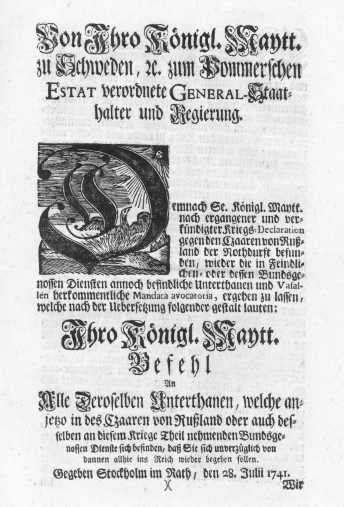

Schlatkow Schmatzin Wolfradshof
–
Dörfer mit Geschichte
In den großen Städten wird deren Weg durch die Jahrhunderte mit Objekten und Überlieferungen dokumentiert,
gepflegt und bewahrt. Viele Dörfer haben eine ebenso alte Geschichte. Oft ist sie jedoch kaum bekannt und
aufgeschrieben.
In Schlatkow reicht sie weit über achthundert Jahre zurück.
Ein Blick zurück
1168 bestätigte der Camminer Bischof Konrad I. von Pommern dem Kloster Grobe auf Usedom alle Schenkungen der
Pommernherzöge. Dabei wird auch eine „villa Solathkeuiz“, ein Gut, erwähnt. Jenseits dieser Ersterwähnung könnte
Schlatkow aber auch wesentlich älter sein. 1253 heißt der Ort „Szlatkowe“.
Matrikelkarte der Landesaufnahme von Schwedisch-Pommern, Landesarchiv Greifswald
Das gleiche Dokument enthält auch die Ersterwähnung von Schmatzin. "Spacenitz" ist slawischen Ursprungs und
bedeutet wohl "Tannenbusch". 1426 heißt es Smertzin und 1657 bereits Schmatzin.
Wolfradshof entstand erst 1848 als Vorwerk des Gutes Schlatkow. Es wurde Sitz der Familie von Wolffradt und
sie wurde zum Namensgeber.
Matrikelkarte der Landesaufnahme von Schwedisch-Pommern, Landesarchiv Greifswald
Kulturlandschaft Peenetal
Die Peene ist ein schmaler, nur 85 km langer, meist stiller, vom größten Niedermoor Mitteleuropas umgebener
Fluss. Und doch ist er der Schlüssel zur Geschichte einer ganzen Region.
Flüsse waren die Routen, auf denen es frühen Einwanderern, den ersten Bewohnern, möglich war, in fremde,
unwegsame Gegenden vorzudringen. Gleichzeitig boten sie den Siedlern als natürliche Hindernisse Schutz. Auch im
Mittelalter wurden die Flüsse zu leistungsfähigen, vergleichsweise schnellen und relativ sicheren Handelswegen.
Foto: Chron-Paul, Wikimedia Commons, CC BY-SA3.0
Nur sechs Kilometer von Schlatkow entfernt, beim Dorf Menzlin, finden sich an der Peene noch heute die Spuren
eines skandinavischen Handelsplatzes aus dem 9. Jahrhundert: zahlreiche „Wikingergräber“, Reste einer
hölzernen Brücke und eine Pflasterstraße. Da der Name der Siedlung nicht überliefert ist, gibt es auch
Spekulationen, den Ort mit der wikingischen „Jomsburg“ oder dem sagenhaften Vineta in Verbindung zu bringen. Der
heutige Name „Altes Lager“ geht wohl erst auf ein Heerlager des Brandenburgischen Kurfürsten während der
Belagerung Anklams 1676 zurück.
Ebenso geheimnisvoll ist die Geschichte der Burg Groswin am gegenüberliegenden Flussufer. Wo ist diese zu
verorten und ist sie mit der Geschichte des Klosters Stolpe oder der Stadt Anklam verbunden? Oder sind
womöglich beide Orte Zeugnis eines langen friedlichen Zusammenlebens von Slawen und Skandinaviern im
vermeintlich „finsteren Mittelalter“?
Nach der darauf folgenden, Jahrhunderte andauernden Geschichte des Flusses als Frontlinie und auch als
Landesgrenze ist er heute als „Amazonas des Nordens“ bekannt und eines der größten Naturschutzprojekte
Deutschlands. Den Fluss umschließt die Vorpommersche Dorfstraße zwischen den Brücken in Anklam und Jarmen mit
touristischen Angeboten und Dörfern mit reicher Geschichte, mit Gutsanlagen, Herrenhäusern, Kirchen und
Ausstellungen.
Die Gemeinde ist Mitglied des Vereins VORPOMMERSCHE DORFSTRAßE e.V., dessen Vereinslogo die Region
charakterisiert: Dörfer, Kopfweiden, Bodendenkmale, Landwirtschaft, Gutshäuser, Dorfkirchen rund um den
Naturpark und die historische Lebensader Peene.
Das Gutsdorf
Schmatzin, Schlatkow und Wolfradshof haben sich, wie viele Dörfer der Region, nicht als Bauern-, sondern als
Gutsdörfer entwickelt. Zentrum des Dorfes war die Gutsanlage mit Ställen, Wirtschaftsgebäuden, einem Gutspark
und dem Gutshaus. Hier lebte der Besitzer mit seiner Familie. Landarbeiter, Leibeigene und Tagelöhner, der Wirt,
der Schmied und andere Handwerker, die direkt oder indirekt von der Gutsanlage abhängig waren, siedelten im
Dorf, das die Gutsgebäude umgibt.
An vielen Häusern in Schmatzin erinnert eine Tafel an den Erbauer Hermann Runge, seit 1890 Besitzer
des
"Rittergutes Schmatzin".
Im Dritten Reich, zwischen 1933 und 1945, kam es mit der Ansiedlung von selbstständigen Bauern zu ersten
Veränderungen der jahrhundertealten Strukturen. Ab 1945 wurden die Gutsanlagen unter dem Motto „Junkerland in
Bauernhand“ aufgelöst, die Äcker parzelliert und Neubauern zur Bewirtschaftung übereignet. Die Gutshäuser
wurden häufig zu Wohngebäuden für Flüchtlinge und Vertriebene.
Mit Beginn der Kollektivierung in der DDR ab 1960 fanden viele Gutshäuser Verwendung als Verwaltungsgebäude
der „landwirtschaftlichen Produktionsgenossenschaften“ (LPG), oder sie wurden Gemeindezentren, Kulturhäuser,
Schulen, Kinderkrippen und -gärten, Dorfgasthöfe oder Konsum-Verkaufsstellen. Diese öffentlichen
Gemeinschaftseinrichtungen waren nach der politischen Wende 1990 zum großen Teil nicht überlebensfähig. Viele
Gutshäuser und -anlagen, die keinen privaten oder öffentlichen Käufer fanden, fielen dem Verfall anheim.
Maikäfer flieg
„Maikäfer flieg / der Vater ist im Krieg / die Mutter ist in Pommernland / Pommernland ist abgebrannt /
Maikäfer flieg!“, heißt es in einem noch heute bekannten Volkslied aus der Zeit des Dreißigjährigen Krieges.
Dieser ließ das Herzogtum Pommern „abgebrannt“ zurück. Wohl mehr als die Hälfte der einheimischen Bevöl-
kerung fiel dem Krieg zum Opfer. Das frühneuzeitliche Pommern gilt heute als exemplarisch für das ostelbische
Junkertum und die unmenschliche Knechtung des Bauernstandes in Leibeigenschaft.
Das Jahr 1648 war nicht nur für das schwedische Pommern die „Stunde Null“, sondern auch für die pommersche
Landwirtschaft. Nach dem Dreißigjährigen Krieg waren viele Höfe Pommerns niedergebrannt und zahllose Äcker
lagen brach. Außerdem sanken die Preise für landwirtschaftliche Produkte und die Bauern waren gezwungen, Hilfe
bei ihren Grundherren zu suchen. Viele bäuerliche Erbhöfe gingen in deren Eigentum über, konnten so
jederzeit „gelegt“, das heißt gekündigt werden.
In diese Zeit fiel die Ausbildung jener berüchtigten, besonders umfassenden Form bäuerlicher Abhängigkeit,
die als Leibeigenschaft bekannt ist. Der leibeigene Bauer war Eigentum seines Besitzers und musste als
Tagelöhner fortan auf dem Gutshof leben und arbeiten. Dieser „Gesindezwangsdienst“ erstreckte sich auf die
ganze Familie des Leibeigenen, selbst auf die Kinder. Die Bauernordnung von 1670 bekräftigte die
Leibeigenschaft ausdrücklich. Die königliche Bestätigung der landständischen Privilegien im Jahre 1720 nannte
die Leibeigenen gar „ein in den Gütern steckendes und mit angeschlagenes Capital, ohne welchem selbige nicht
zu unterhalten und zu cultivieren“ seien. Ergebnis war die fast vollständige Auflösung des Bauernstandes.
Der selbst wirtschaftende Bauer hatte sich als unwirtschaftlich erwiesen. Der Übergang zum
landwirtschaftlichen Großbetrieb war also keineswegs erst ein Ergebnis der Kollektivierung in der DDR.
Am Ende der schwedischen Herrschaft lebten in Pommern rund 100.000 Menschen, bis zu 70.000 davon waren
Leibeigene.
Beginnend in den 1890-er Jahren im einheitlichen Stil errichtete Bauernhäuser in Schmatzin
Die Melkerschule Schlatkow
Teilnehmer des Meisterlehrgangs 1937. Im Bild sitzend von links die Ausbildenden:
Melkermeister
Rudolf Zieger, Gutsherr Hans-Joachim von Nathusius, Tierzuchtinspektor Walter Ruschek
Auch im Dritten Reich erlangte Schlatkow nochmals überregionale Bedeutung. 1934 wurde in den noch heute
vorhandenen Gebäuden der Gutsanlage die Pommersche Melkerschule eingerichtet. Die Melkerlehrwirtschaft für
ganz Pommern war eine Einrichtung des Reichsnährstandes, einer ständischen Organisation der
nationalsozialistischen Agrarpolitik in den Jahren 1933 bis 1945. Neben der von der Pommerschen Landesver-
waltung eingerichteten Schlatkower Schule gab es eine weitere in Hinterpommern. In vierwöchigen Lehrgängen
wurden bereits im Beruf stehende Melker zur Meisterprüfung geführt. Neben der theoretischen Ausbildung
erfolgte Anschauungsunterricht an einer „Gläsernen Kuh“ und an einem Rinderskelett im Unterrichtsgebäude, das
heute im Sprachgebrauch des Dorfes „Melkerschule“ heißt. Der praktische Unterricht erfolgte im Kuhstall des
Gutes Schlatkow bei Melkermeister Zieger. Den theoretischen Unterricht erteilte der im Gut arbeitende Tier-
zuchtinspektor Ruschek. Auch die Unterbringung der Teilnehmer erfolgte in den beiden Fachwerkgebäuden der
heute unter Denkmalschutz stehenden Gutsanlage.
Nach dem Krieg wurde die Ausbildungsstätte nicht mehr benötigt, Vieh und Land wurden im Zuge der Bodenreform
enteignet und verteilt.
Ein gerettetes Kleinod
Dass es die Schlatkower Kirche aus dem 13./14. Jahrhundert heute noch gibt, ist ein kleines Wunder. Bereits im
Dreißigjährigen Krieg zerstört und durch die Bewohner wieder aufgebaut schlug 1699 der Blitz ein und die
Kirche brannte ab. Sie wurde wieder aufgebaut, jedoch ohne Turm. Statt seiner errichtete man den frei stehenden
hölzernen Glockenstuhl, wie er noch heute existiert, mit drei, zum Teil über 500 Jahre alten Glocken.
Aus kaum behauenen Feldsteinen bestehen die Wände, nur die Ecken bilden winklig
behauene Granitquader. Foto: Assenmacher, 2015, wikimedia, CC BY-SA3.0
1985 musste das inzwischen marode Bauwerk baupolizeilich gesperrt werden. Es ist Schlatkower Bewohnern unter
Leitung des Diakons Eckhard Buntrock zu danken, dass wertvolles Inventar heute noch existiert. Wo möglich
bauten sie dieses aus und sicherten es, bevor am 11. Dezember 1985 der Dachstuhl der Kirche einstürzte. An einen
Wiederaufbau in der DDR war nicht zu denken und das Ende der Kirche schien besiegelt. Unerwartete Hilfe kam
aus der Bundesrepublik Deutschland in Form des Dorfkirchen-Sanierungsprogramms der Nordelbischen Kirche. Am 13.
Oktober 1987 traf die Firma Thiel aus Schönberg bei Kiel mit elf Tiefladern, allen erforderlichen Materialien
und Handwerkern in Schlatkow ein. Die Arbeiter wurden nicht nur im Dorf untergebracht und beköstigt, sondern
auch mit etwa 10 000 freiwilligen Arbeitsstunden unterstützt.
Das Innere der Kirche vor dem Einsturz
Erhaltene Teile der Kirche wie der spätgotische Ostgiebel wurden restauriert, das Verlorene sichtbar ergänzt.
An Stelle des ursprünglichen hölzernen Tonnengewölbes wurde eine flache Decke eingezogen. Am 23. Mai 1988 wurde
die neue, alte Kirche durch Bischof Horst Gienke aus Greifswald mit einem Pfingstgottesdienst feierlich
eingeweiht.
Zustand der Kirche 1986
Unter den drei Kronen
Erst vor gut 200 Jahren wurde Vorpommern preußisch. Davor war die Region anderthalb Jahrhunderte Teil des
schwedischen Königreichs.
Die drei Kronen: das Wappen des schwedischen Königreichs (Sodacan, Public domain, via Wikimedia
Commons)
Nachdem der Westfälische Frieden 1648 den Dreißigjährigen Krieg beendet hatte, kam ganz Vorpommern zu Schweden.
Das Land war verwüstet und durch die Pest gezeichnet. „Unter den drei [Schweden-]Kronen, da lässt sich‘s
trefflich wohnen“, wird später eine viel zitierte Beschreibung der folgenden 160 Jahre Schwedisch-Pommerns.
Anlässlich von 57 Kriegs-Jahren in dieser Zeit ist eine gewisse Skepsis angesagt. Im Großen Nordischen Krieg
der gegen den Schwedenkönig verbündeten Sachsen, Russen, Dänen, Polen und Preußen ist die Region wieder Kampf-
gebiet. Schweden verliert letztlich einen großen Teil Pommerns zunächst an Dänemark, dann an Brandenburg. Die
nahe Peene wird Grenzfluss und Anklam für 100 Jahre eine geteilte Stadt.
Tatsächlich hat die im Westfälischen Frieden bestimmte „Doppelherrschaft“ des Schwedenkönigs als Herzog von
SchwedischPommern und der regionalen Autonomie der Landstände, der Gutsherrschaften und Städte, die ihre
Rechte und Privilegien behielten, Vorpommern nachhaltig geprägt.
Das Jahr 1807 und der Feldzug Napoleons gegen Preußen bringt Schlatkow dann sogar in die Geschichtsbücher. Der
französische Oberbefehlshaber Mortier und der schwedische Generalmajor von Essen handeln den
„Waffenstillstand von Schlatkow“ aus. Bestand hat der Friedensschluss allerdings nicht. Erst der Wiener Kongress
1815 beendet die Schwedenzeit in ganz Pommern endgültig.
Zwischen Tradition und Moderne
Der Westfälische Frieden von 1648, der Beginn der Schwedenzeit Vorpommerns, war für über 160 Jahre das
heimliche Grundgesetz Schwedisch-Pommerns. Das schwedische Pommern war ein Zwitter: zugleich Territorium des
Heiligen Römischen Reiches Deutscher Nation und Provinz des Königreiches Schweden. Diese „doppelte
Staatsangehörigkeit“ im Ergebnis des Dreißigjährigen Krieges bestimmte die Parallelität
königlich-schwedischer und landständisch-pommerscher Landesregierung. Die schwedischen Könige erhielten ihre
Ostseeprovinz zwar einerseits „in perpetuum“, also für die Ewigkeit. Anderseits ließ der Friedensvertrag sie
hier nur als dem römisch-deutschen Kaiser lehnsverpflichtete Herzöge von Pommern regieren.
Artikel 10 garantierte den pommerschen Ortsobrigkeiten „die ihnen zukommende Freiheit, ihre Güter, Rechte und
Privilegien, die sie rechtmäßig erworben oder durch langen Gebrauch erhalten haben“. Es galt die alte
landständische Verfassung, „wo jede Stadt, jeder Herrenhof fast einen unabhängigen Staat bildet, [...] wo man
gute Einrichtungen wie mit Gewalt einführen muss.“, wie Generalgouverneur von Hessenstein als Repräsentant des
schwedischen Königs Gustav III. 1782 an diesen schreibt.
Der Landtag war der verlängerte Arm der Lokalherren. Die Königliche Regierung berief Landtage ein, hatte
dort aber keine Stimme. Die Gesetzgebung funktionierte nach dem Prinzip der gegenseitigen Kontrolle über das
„Einigkeitsprinzip“. Ein Beschluss konnte nur gefasst werden, wenn sich die Landstände untereinander und mit
der Provinzialregierung einig waren. Dieses praktische Veto-Recht beider Seiten ist ein Grund, weshalb
Reformen in Schwedisch-Pommern nur schwer und schleppend durchzusetzen waren. Dies brachte das Land in den Ruf
besonders behäbig und rückständig zu sein.
Die Königliche Verwaltung war zentralisiert und damit direkter und reformfreudiger. Ihre Macht beschränkte
sich aber auf landesherrliche Kompetenzen, die zivile und militärische Verwaltung, Hofgericht,
Kirchenverwaltung und Steuererhebung.
Die schwedische Landesaufnahme
Die seit 1906 gültige Flagge Schwedens
Die schwedische Zentralgewalt benötigte für die Besteuerung ihres neuen Landesteils eine Grundlage. Die alten
pommerschen Hufenmatrikel waren zu ungenau und nicht auf einem aktuellen Stand. Der schwedische König Karl XI.
entschied 1690, die Landesvermessung von einer königlichen Kommission durchführen zu lassen. Mit über 1700
erhaltenen Karten und zugehörigen Beschreibungsbänden ist die Schwedische Landesaufnahme auch heute eine
archivalische Quelle einmaligen Ranges für die Erforschung der Geschichte Pommerns.
An der Universität Greifswald begann nach dem Ersten Weltkrieg die wissenschaftliche Auswertung. Mit
Unterstützung der Deutschen Forschungsgemeinschaft wurde 1936 mit einer Edition begonnen. Die Matrikelkarten
und die Beschreibungsbände waren bis zum Zweiten Weltkrieg im Stettiner Staatsarchiv aufbewahrt worden. Gegen
Kriegsende wurden diese dann zusammen mit anderen Urkunden nach Schwerinsburg, heute Gemeinde Löwitz, ca. 13
km südlich von Anklam, ausgelagert und dort in einfachen Holzkisten in einem unverschlossenen Schuppen
aufbewahrt.
Bewohner und Flüchtlinge, die in Schwerinsburg einquartiert worden waren, wussten nichts von dem Wert der dort
eingelagerten Urkunden, Bücher und Karten. Sie nutzen das Holz zum Bau von Kaninchenverschlägen und
Bettgestellen. Das vermeintlich „wertlose Altpapier“ wurde als Tütenersatz und als Anzündhilfe verwendet. Der
Anklamer Bürgermeister Rudolf Klühs entdeckte eine umherfliegende Matrikelkarte auf der Straße, erkannte den
Wert und benachrichtigte den Anklamer Lehrer und Heimatforscher Hermann Scheel. Dieser rettete in einer
zweiwöchigen Aktion mit Pferdefuhrwerken alle noch unzerstörten Gegenstände, die aus dem Stettiner Archiv
ausgelagert worden waren. Viele Urkunden sind seitdem verloren. Bei den Matrikelkarten hingegen fehlten nur
wenige.
Seit 1992 erschienen mehrere Bände mit Übersetzungen der Beschreibungen. Im Landesarchiv Greifswald sind
heute 847 Urkarten, 598 Reinkarten und 74 Registerbände vorhanden. Weitere 127 Karten aus dem Bestand des
Instituts für Geographie der Universität Greifswald wurden digitalisiert und über das Internet der
Öffentlichkeit zugänglich gemacht.
Schwedisches Pommern oder Pommersches Schweden?
„So klein Pommern auch ist, so bringt es uns doch mehr Ansehen als fast das halbe Schweden. All die
Aufmerksamkeit, die Frankreich und die evangelischen Mächte uns schenken, beruht auf Pommern.“ So ist 1724
beim schwedischen Reichsrat protokolliert. Pommern war für Schweden der prestigeträchtige Brückenkopf auf das
europäische Festland, der Garant für die Anerkennung als Großmacht.
Auch als Kornkammer war Pommern für Schweden von Bedeutung. War die schwedische Ernte nicht ertragreich genug,
wurde den Kaufleuten in Stralsund, Wolgast und Greifswald die Ausfuhr in fremde Länder schlicht verboten. Rund
ein Viertel der Schiffe, die jährlich den Hafen von Stockholm anliefen, kam aus der Provinz. Aber auch Menschen,
Ideen und Kompetenzen gingen gen Norden. Ernst Moritz Arndt war Taufpate einer schwedischen Ausprägung der
Romantik. Wissenschaftler emigrierten genauso wie viele pommersche Ärzte, die die schwedische Medizin zu
modernisieren halfen. In den ersten 100 Jahren schwedischer Herrschaft verschmolzen die Adelsfamilien
Schwedens und Pommerns durch gegenseitige Migration zu einer homogenen Oberschicht des Ostseereiches.
Die Bevölkerung Pommerns sah im schwedischen Königreich mit Recht ein Pendant zu Rückständigkeit,
Reformunfähigkeit und Leibeigenschaft durch die traditionelle Macht der pommerschen Landstände. Der
schwedische Einfluss blieb jedoch auf allgemeine Landesaufgaben und auf den königlichen Landbesitz beschränkt.
Geschützt durch die landständische Verfassung wussten die pommerschen Landstände ihre Privilegien und
Besitzstände gegen die schwedische Krone zu verteidigen und ihre lokale Macht zu sichern.

Der Waffenstillstand von Schlatkow
Seit 1806 führte Napoleon mit seinen Verbündeten Krieg gegen Preußen und Russland. Unter dem Eindruck der
drohenden Besetzung Schwedisch-Pommerns strebte der schwedische Generalgouverneur und Oberbefehlshaber
Hans Henrik von Essen Waffenstillstandsverhandlungen mit seinem französischen Gegenspieler Édouard Adolphe
Mortier an. Man verständigte sich darauf, die Verhandlungen in Schlatkow zu führen, das für beide Seiten güns-
tig nahe der Peene lag. Mortier schreibt:
„Die Zeit des Treffens wird zur Mittagsstunde sein und ich werde mich mit einer Eskorte von hundert Pferden
dorthin begeben.“ Von Essen antwortet:
„Monsieur Le Genéral! Der Offizier, den Ihre Exzellenz die Ehre hatte mir zu schicken befand den Zustand der
Straße als sehr schlecht und er brauchte also viel Zeit, um nach Schlatkow zu kommen. Daher bin ich mit ihm
übereingekommen, dass unsere Unterredung heute um vier Uhr nachmittags stattfinden wird[. ...] Ich werde
ebenfalls von einer Eskorte von hundert Pferden begleitet.“
Die Verhandlungsführer einigten sich bei ihrem Treffen am 18. April 1807 auf folgende Punkte:
Die Peene und die Trebel sollten die Demarkationslinien zwischen beiden Militärmächten bilden.
Die schwedischen Truppen sollten sich von den Inseln Usedom und Wollin zurückziehen.
Schweden durfte weder den belagerten Städten Danzig und Kolberg, noch sonst einem Gegner Frankreichs Hilfe
leisten.
Das Territorium Schwedisch-Pommerns durfte nicht von den Truppen der Gegner Frankreichs genutzt werden.
Der Vertrag hält jedoch nicht. Erst der Wiener Kongress 1815 beendet die napoleonische Herrschaft ebenso wie
die Schwedenzeit in Pommern.
Matrikelkarte der Landesaufnahme von Schwedisch-Pommern
BII 47 Schlatkow (Sladekow) Amt/Distrikt Wolgast, Oloff (Olaus) Spaak, 1694, Originalmaßstab:
1:8.333, Landesarchiv Greifswald, Band 53, S. 357 (Digitalisierung: Institut für Geographie und Geologie,
Universität Greifswald)